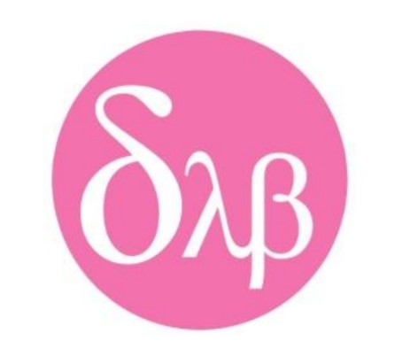

Here, science meets curiosity and imagination takes the driver’s seat! From mind-blowing discoveries and the latest tech trends to weird, wonderful, and “wait, is that even possible?” facts — we’ve got it all. At FabScientist, we turn complex research into exciting stories you’ll actually want to share. Whether you’re a science enthusiast, a curious learner, or just someone who loves fun facts, get ready to explore the amazing world of science and technology in the most fascinating (and fab!) way possible!